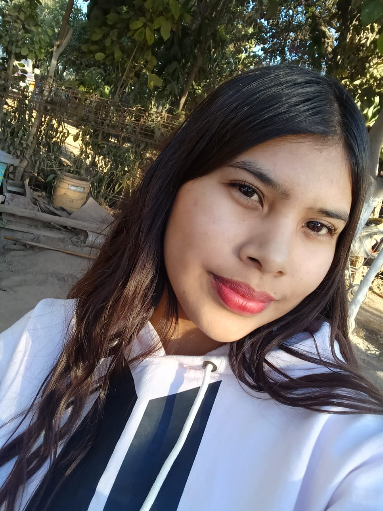

Abril Ochoa
López
DISEÑADOR GRÁFICO
EDUCACIÓN
- Escuela secundaria técnica #7
- Escuela primaria Ignacio Allende
- Prescolar El solecito
HABILIDADES
- Comunicación
- Inteligente
- Trabajo en equipo
ACERCA DE MI
Soy una estudiante de preparatoria en la especialidad de diseño gráfico, con un promedio bien, me gusta estar en armonia con los demás.
EXPERIENCIA LABORAL
- Diseños de logotipos
- Diseños de casas en sketchup
- Diseños en ilustrator
SOFWARES
- Adobe Ilustrator
- Microsof Excell
- sketchup
CONTACTO
- 6371175067
- Abrilochoa@gmail.com
- El Rodeo contra esquina de la iglesia de jesucristo